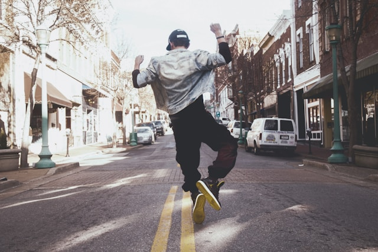
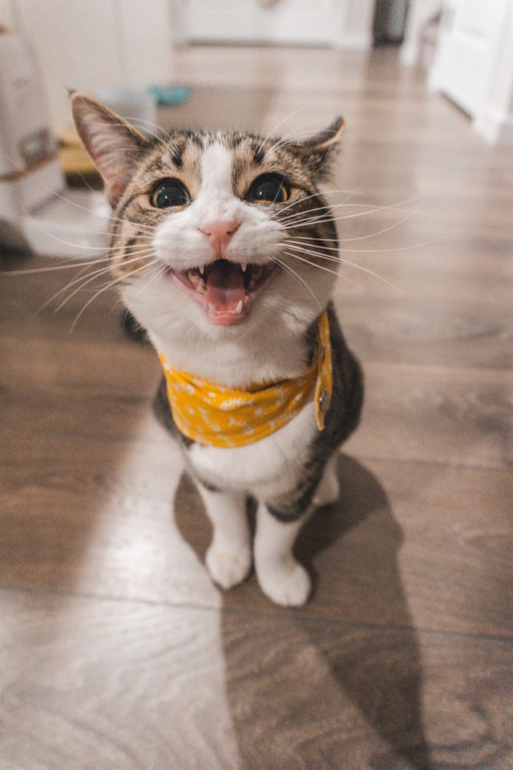
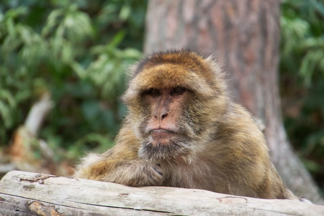
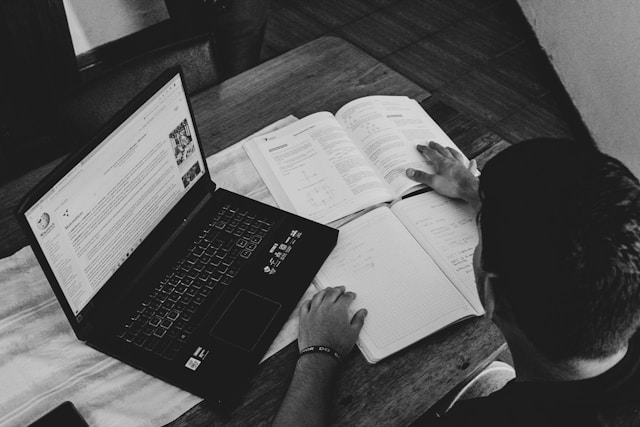
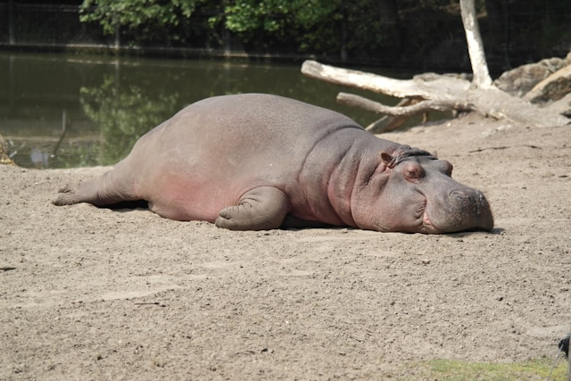
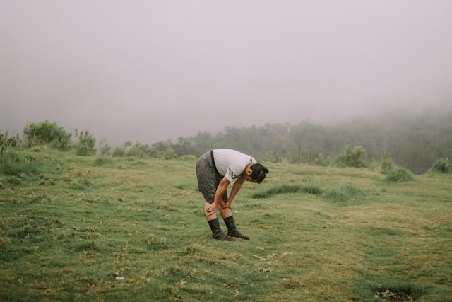
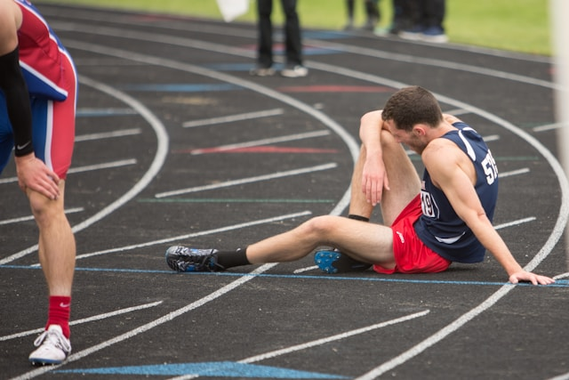
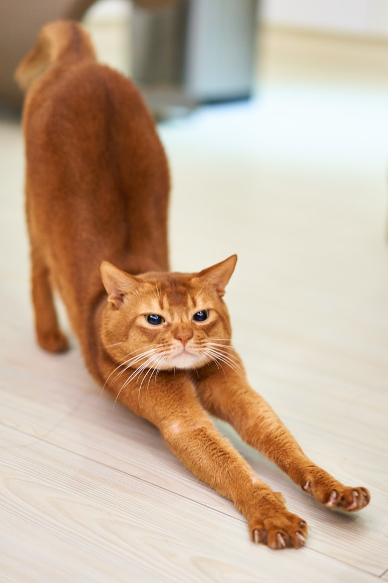

Это было самое начало пути. На этом этапе важно было проникнуться
основами и настроиться на учёбу. И, возможно, подумать, как новые
знания могут повлиять на ваше будущее.
Когда курс только начинался, я был полон энергии и энтузиазма
заниматься вёрсткой.
1 спринт: Я — чистый лист
Погружение
На первых этапах мы работали со страхами и сомнениями, которые часто
испытывают новички. Один из них — страх перед чистым листом. Это,
конечно же, намного сложнее, чем боязнь куска бумаги. Часто за этим
ощущением скрываются более глубокие вопросы: с чего начать? а вдруг
будет слишком сложно? что, если я не справлюсь?
Когда начался первый спринт, я начал активно погружаться в теорию по
вёрстке, изучать материал, выполнять задания с энтузиазмом и
восторгом.
1 спринт: А если не получится?


Первые успехи
Первый проект — позади! Но это всё ещё самое начало пути. Радость
могла быстро померкнуть и смениться ожиданием провала. Или вы,
наоборот, могли вдохновиться успехами и поверить в себя.
Вот я закончил первый спринт. Узнал много нового, сверстал первый
макет, использовать PixelPerfect. Мне было радостно, что всё
получается.
2 спринт: Погоня за идеалом


Справляюсь с трудностями
На этом этапе вы уже достаточно разбирались в основах вёрстки, чтобы
понять, как много ещё впереди. Вы могли попытаться погнаться за
идеалом и понять, что он недостижим. А, может, вы вовсе и не
подвержены перфекционизму и вместо того, чтобы сделать идеально,
старались просто сделать.
На этом спринте энергии и сил ещё было предостаточно, чтобы
справиться со всеми трудностями обучения новому. Но именно здесь
теория начала немного перемешиваться и плохо усваиваться.
2 спринт: О тех, кто рядом

Огонёк гаснет
Всё это время вы были не одиноки (хотя, возможно, иногда и
чувствовали, что одни против целого мира). Вас окружали
одногруппники, команда сопровождения и просто близкие люди, которым
можно пожаловаться, если очередной макет просто так не поддавался.
Осваивать что-то новое легче, когда рядом есть единомышленники, не
правда ли?
После окончания 2 спринта я чувствовал некую усталость, желание
передохнуть и как-то восстановить силы для следующего спринта, но
время не ждёт, поэтому с остатком сил ринулся в бой.
3 спринт: Обходные стратегии
Информационная пытка
На этом курсе вы постоянно решали разные задачи. В какой-то момент
вам могло показаться, что решения просто иссякли. Значит, пришло
время посмотреть на задачу под другим углом.
Этот спринт показался настоящей пыткой. Я очень долго разбирался в
теории, половину материала забывал на ходу и не мог запомнить,
особенно относительные единицы, функцию clamp() и медиазапросы.
Пришлось перейти на обучение без дедлайнов. Я негодовал на
практикум, злился, что теории много, а она очень трудная. Здесь силы
иссякли. У меня начало появляться выгорание.
3 спринт: Когда опускаются руки


Выгорание
Во время учёбы часто возникает чувство, когда не знаешь, за что
хвататься. Вроде и проектную пора сдавать, и задачи хочется
порешать, и в теории получше разобраться, и жизнь не забыть пожить.
В такие моменты очень нужна концентрация. Вспомните, откуда вы её
черпали.
После трудностей с теорией меня ждал проект, который был очень
тяжелым, так как половину материала я забывал на ходу и не мог
усвоить с первого раза. Только с 3 попытки мне удалось сдать проект.
На этом этапе силы кончились, я хотел быстрее сделать курс и больше
не возвращаться к вёрстке.
«Сейчас я здесь»

Второе дыхание
Сейчас вы уже очень много знаете о вёрстке. Но это только начало.
Во-первых, впереди ещё много материала про «красотищу». Во-вторых, с
окончанием курса учёба не заканчивается. Вёрстка — это целый мир. И
этот мир постоянно меняется. Познать его полностью не получится, но
это тот случай, когда важен сам процесс познания. Ведь часто путь —
и есть результат.
Выгорание от учёбы ещё есть. Хочется быстрее закончить и отдохнуть.
На это появились силы и второе дыхание. В целом, материал был усвоен
в большей степени. Благодаря ревьюеру, который давал замечания много
что уложилось на практике, наставник тоже сильно помогал. Очень
надеюсь, что успею сдать этот проект и получить сертификат, чтобы
похвастаться им на линкедине :)
 Восторг
Восторг